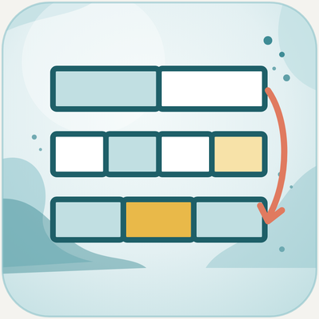
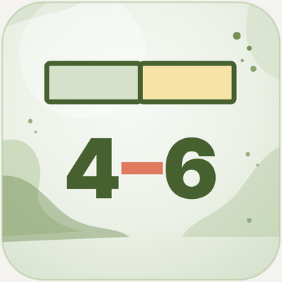
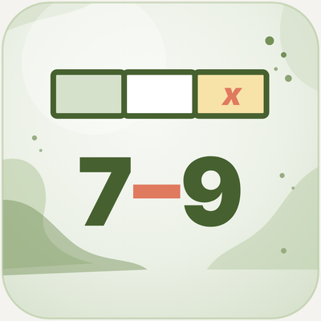
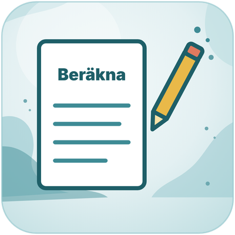
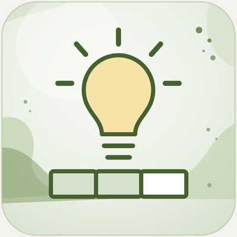

Blandade uppgifter15 genomgångar steg för steg.
MellanstadietKom igång med enklare tal och korta steg.
HögstadietStörre tal, fler steg och ekvationer.
Öva interaktivtRita blocken och räkna. Nya tal varje gång.
Så tänker duSteg för steg, tre sorters modeller och tips när du ritar.Läs mer →